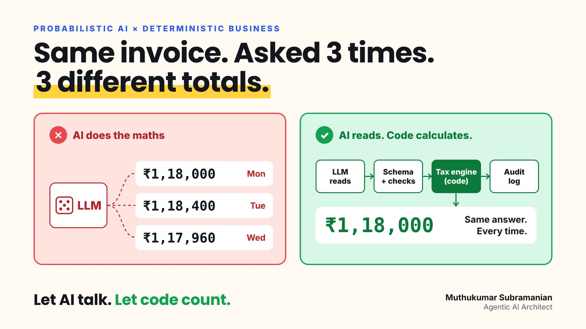

Let AI Talk. Let Code Count.
By Muthukumar Subramanian · Agentic AI Architect

Try this experiment.
Give an AI model a messy invoice, with a few line items, a discount and GST, and ask it for the total.
Then ask again in a new chat. And again.
Most of the time you'll probably get the right number. Sometimes you won't. Occasionally you'll get three slightly different totals, each explained with complete confidence.
For a blog post, that's fine. For an invoice, it's a problem.
I've been in IT for 25 years, at Infosys and then as a consultant and fractional executive, and a lot of that time has been spent on systems where "approximately correct" simply means wrong. You can't approximately pay a vendor. You can't approximately file taxes.
That's the gap I want to talk about.
AI works on probability. Business runs on certainty.
Large language models don't look up answers. They predict the next word (strictly speaking, the next token) based on probabilities learned from enormous amounts of text.
That's exactly why they're so useful. Ask why sales dropped and you'll get a thoughtful answer covering pricing, churn, competition and seasonality. Ask again and you'll get a slightly different, equally useful one.
For explanations, ideas and drafts, that variation is a feature.
Now think about:
→ An invoice total
→ A tax calculation
→ An interest computation
→ An engineering measurement
→ A dosage, a load limit, a reconciliation
Here we don't want a good answer. We want the answer, and the same one every time we ask.
If a room is 5 m by 4 m, the area is 20 m². Not 19.8 on Monday and 20.3 on Tuesday.
Three things people often get wrong about this
1. Not every wrong answer is a hallucination.
A hallucination is when the model confidently makes something up. But an answer can also be correct and irrelevant, relevant and wrong, or simply uncertain because the data isn't there. Each of these failures needs different handling. Calling all of them "hallucination" hides the real problem.
2. Temperature zero doesn't turn an LLM into a calculator.
Lowering randomness makes answers more repeatable. It doesn't guarantee identical outputs across model versions or infrastructure, and it certainly doesn't make them correct. A model can be consistently wrong.
3. Consistent isn't the same as correct.
A miscalibrated weighing scale gives you the same wrong reading every time. Determinism without accuracy is just reliable error.
Haven't the newer models fixed this?
Partly, and they deserve credit.
Structured outputs can force a model to answer in an exact format, such as specific fields and types. Tool calling lets a model hand work to a real calculator, database or API instead of guessing.
These are big steps forward. But here's the catch:
A perfectly formatted answer can still contain the wrong number.
The JSON can be valid and the invoice total still wrong. The model can call the calculator and pass it the wrong quantity.
So the fix isn't just better models. It's better architecture.
The principle: let AI talk, let code count
Stop asking one model to do everything. Split the work.
Take that invoice:
1. AI reads. The model understands the request and the messy document. This is what it's brilliant at.
2. Structure and check. It extracts quantities, prices and tax codes into a strict format. Anything missing or ambiguous gets flagged. It's never quietly filled in.
3. Code calculates. A proper tax engine applies the formulas and rounding rules. Plain, boring, tested code. No predictions.
4. Verify. Recalculate independently, reconcile with the records, and get a human to approve if the stakes are high.
5. AI explains. Now the model comes back and explains the verified total in plain language: what was charged, why, and what looked odd.
The model brings the intelligence. The system holds the authority.
Same invoice. Same total. Every time.
This matters even more with AI agents
An agent doesn't just answer. It decides which tool to use, gathers data and takes actions. Every one of those steps is a new chance to go wrong.
So the boundaries need to be explicit.
An agent can prepare a payment from an invoice. That doesn't mean it should approve and execute the payment on its own.
Reading the invoice, calculating the amount, checking the vendor, authorising and paying should each have a clear owner and a clear control. The agent coordinates. It isn't the final authority on everything.
And when something doesn't add up, the system should fail closed: stop and ask instead of inventing a value to keep the workflow moving.
Where this leaves us
The first wave of enterprise GenAI was about what models can do.
The next wave is about how reliably we can plug them into real business operations.
A proof of concept shows the model can read an invoice. A production system has to show that the data was validated, the maths was right, permissions were respected, failures were handled and the whole thing can be audited.
That doesn't come from prompt engineering. It comes from system design.
So I don't think the goal is to make AI deterministic. That fights the very thing that makes it useful.
The goal is to make sure probabilistic outputs can never bypass the deterministic controls your business depends on.
Let AI talk. Let code count.
I'm curious how others are handling this 👇
In your AI systems, where exactly do you draw the line between what the LLM decides and what code decides?